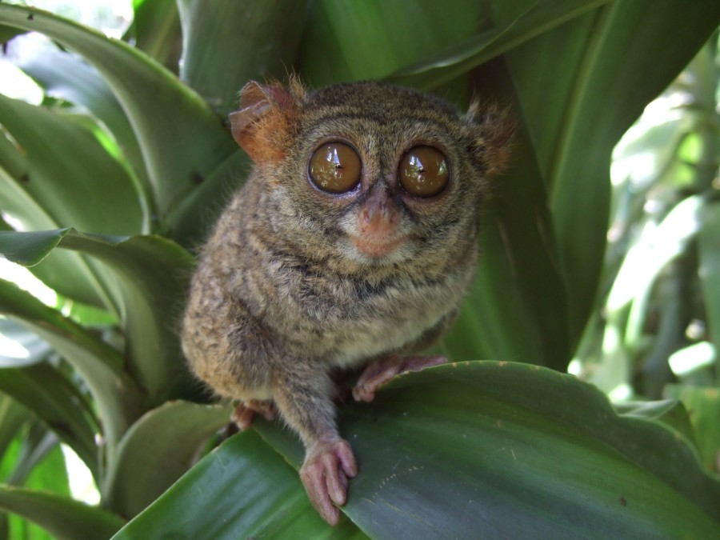

Ini dia spesies asli Indonesia yang mempunyai ukuran mungil dan wajah unik yang seolah seperti melotot. Singapuar yang memiliki nama latin Tarsius Bancanus ini disebut-sebut sebagai primata terkecil di dunia. Hal ini didasari fakta bahwa Singapuar hanya memiliki berat berkisar antara 80-140 gram dengan panjang berkisar antara 12-15 cm. Singapuar memiliki mata yang tajam dan besar, tetapi ia hanya bisa melihat dengan jelas pada malam hari, sedangkan pada siang hari pandangannya agak rabun. Yang unik dari singapuar ini adalah bahwa bola matanya tidak dapat bergerak ke kiri dan kanan sehingga ia tidak bisa melirik ke sekitarnya. Untungnya, ia terbantu dengan kemampuan lehernya untuk berputar 180 derajat sehingga ia tetap bisa mengamati sekitarnya. Singapuar memiliki tubuh dengan bulu lembut dan mirip beludru berwarna cokelat abu-abu, cokelat muda atau kuning-jingga muda. Singapuar temasuk binatang nokturnal yang aktif mencari makanan pada malam hari. Makanan mereka adalah para serangga kecil. Mereka banyak menghabiskan waktunya di atas pepohonan dan melompat dari satu pohon ke pohon lain. Walaupun ukuran tubuhnya cukup kecil, singapuar dapat melompat cukup jauh hingga kurang lebih sejauh 3 meter. Singapuar adalah binatang soliter atau penyendiri. Mereka tidak pernah hidup secara berkelompok. Bahkan jika mereka ditempatkan dalam satu kelompok, maka mereka akan melukai dirinya sendiri karena mengalami stress. Saat ini Singapuar termasuk ke dalam satwa dalam kategoti terancam punah. Di Indonesia, penyebaran Singapuar meliputi daerah di Sumatera bagian Selatan dan Tenggara, Kepulauan Riau, dan Kalimantan